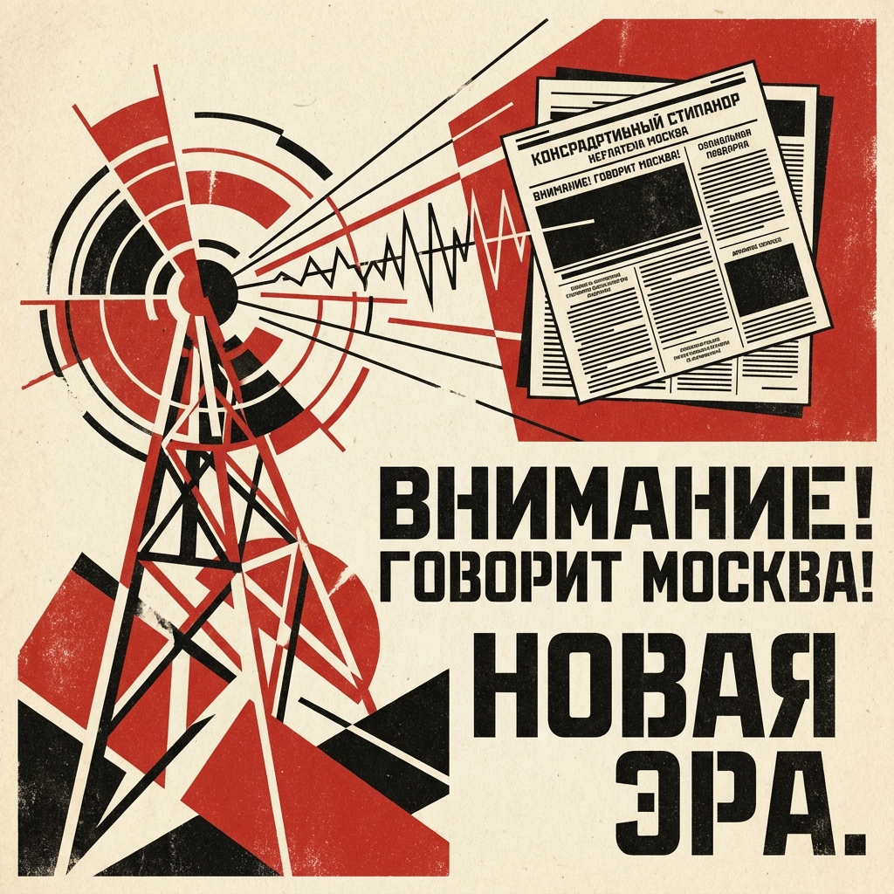

Общество
Политика и Медиа: Читаем между строк
Язык новостей — это особый код. Чтобы понимать, что происходит, нужно уметь переводить с "новояза" на человеческий язык.

Словарь Эвфемизмов (Новояз)
Официальные СМИ часто смягчают реальность, используя специальные термины.
"Произошел хлопок газа"
> Взрыв (Eksplosion)
"Отрицательный рост экономики"
> Падение / Кризис (Tilbagegang)
"Задымление"
> Пожар (Brand)
"Высвобождение рабочей силы"
> Массовые увольнения (Fyringer)
Политическая лексика
- Силовики — представители силовых структур (полиция, ФСБ, армия), имеющие политическое влияние.
- Иноагент (Иностранный агент) — ярлык для оппозиционных СМИ и активистов.
- Скрепы — традиционные ценности, объединяющие нацию (часто используется иронично).
Практика: Дешифратор Заголовков
Что на самом деле означает этот заголовок?